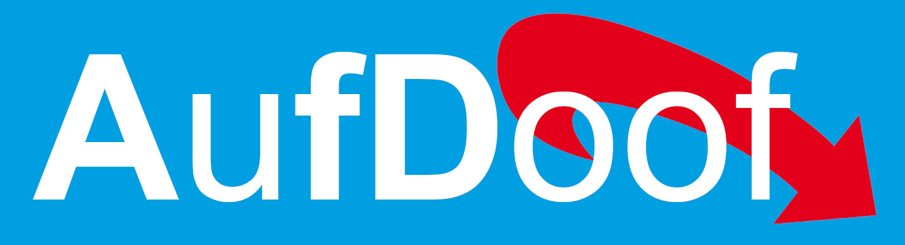

Wen wählen?
Wähle eine Partei, deren Wahlversprechen auch die von dir gewollten Änderungen bewirken können.
Die AufDoof Partei (AFD) hat in ihrem Wahlprogramm lauter tolle Dinge stehen, die aber in der Realität zum Gegenteil führen. Das ist Dummfang und Betrug.
Willst Du Dich wirklich für so dumm verkaufen lassen, nur damit diese Eliten aus der AufDoof Partei noch mehr Macht und Geld bekommen?
Wenn du für mehr Steuern, für mehr Immigration, für Unrecht und mehr Unordnung, gegen eine sichere Rente, für Chaos in Deutschland, gegen die Natur bist und deine Familie hasst, dann wähle AufDoof, denn genau dass bewirkt das Handeln dieser Partei.
